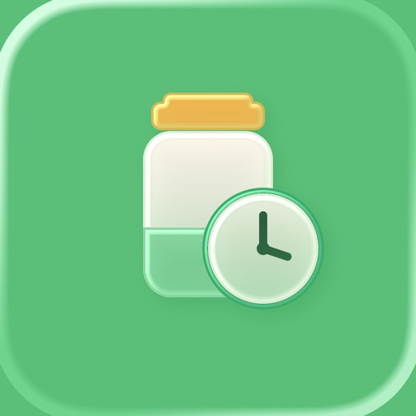

掃描條碼記錄食物、日用品與美妝的到期日與存量，到期前主動提醒；還能分析每月花費，和家人共用同一份庫存。Scan to track expiry dates and stock for food, household items, and cosmetics. Get reminders before things go off, see where your money goes, and share one inventory with your family.食品・日用品・コスメの賞味期限と在庫をスキャンで記録。期限前にお知らせし、毎月の支出も分析。家族と同じ在庫を共有できます。
Mottai 讓家裡每一樣東西，都在過期前被好好用掉。Mottai helps everything at home get used before it expires.Mottai は、家にあるものを期限が切れる前にきちんと使い切るお手伝いをします。
掃條碼帶入商品名稱，再補上到期日、數量與存放位置，幾秒完成一筆；也能用相機辨識包裝上的品名與到期日，全程在裝置上完成。Scan a barcode to fill in the name, then add expiry, quantity and location in seconds. The camera can also read names and expiry dates on-device.バーコードで商品名を取り込み、賞味期限・数量・保管場所を数秒で登録。カメラで商品名と期限を端末内で読み取ることもできます。
多階段到期提醒，加上依用量預估的「快用完」補貨提醒，再搭配採購清單與待補貨 Widget，不再放到過期，也不再買重複。Multi-stage expiry alerts plus running-low restock reminders based on your usage, with a shopping list and a to-restock widget — nothing left to expire, nothing bought twice.多段階の期限通知に、使い方から推定する「そろそろ切れます」の補充通知。買い物リストと要補充ウィジェットで、期限切れも二重買いもなくします。
訂閱雲端方案開個群組，和家人、伴侶共用庫存與採購清單，誰買了、誰用掉都即時通知；受邀的家人免費加入。Subscribe to the Cloud plan and open a group to share stock and the shopping list with family; every purchase and use-up is notified instantly, and invited family join free.クラウドプランを購読してグループを作ると、家族と在庫と買い物リストを共有。誰が買った・使い切ったかは即時通知され、招待された家族は無料で参加できます。
標示「完整版」「雲端方案」的是進階功能，其餘全部免費。Features marked Full version or Cloud plan are the advanced ones; everything else is free.「フル版」「クラウドプラン」の表示は上級機能です。それ以外はすべて無料。
掃條碼帶入商品名稱，補上到期日、開封日、數量、存放位置與購買來源；容量單位自動預設，也能用相機即時或拍照辨識包裝上的品名與到期日（全程在裝置上）。Scan a barcode to fill in the name, then add expiry, opened date, quantity, location and source. Units default smartly, and the camera can read names and expiry dates on-device.バーコードで商品名を取り込み、賞味期限・開封日・数量・保管場所・購入元を登録。容量の単位は自動で選ばれ、カメラで商品名と期限を端末内で読み取ることもできます。
在商店掃一下條碼，立刻查個人與所有共享群組還有幾個、放在哪，避免重複購買；也能從控制中心或鎖定畫面一鍵開啟。Scan a barcode in the store to see how many you already have and where — across personal and shared groups. Open it from Control Center or the Lock Screen.店頭でバーコードをスキャンすると、個人と共有グループの在庫数と保管場所がすぐ分かります。コントロールセンターやロック画面からも起動可能。
個人或與家人共享；依「低量」「快用完」自動建議補貨，物品頁一鍵「該補貨」，買到打勾就記進庫存，補了新批次待買自動消除。Solo or shared. Low-stock and running-low suggestions, a one-tap “Restock” on any item, check off to log it into stock — and entries clear themselves once you restock.個人でも共有でも。「残りわずか」「そろそろ切れます」から補充候補を提案。物品ページからワンタップで追加、買ったらチェックで在庫に記録、補充すると自動で消えます。
多階段提醒（當天／3 天／7 天前…），在你指定的時間送出；各分類可設預設提醒時機，「即將到期」天數可自訂。Multi-stage alerts (same day, 3, 7 days ahead…) at the time you choose, per-category defaults, and a custom “expiring soon” window.多段階のリマインダー（当日・3日前・7日前…）を指定時刻に通知。カテゴリごとの既定タイミングと、「まもなく期限」の日数のカスタマイズに対応。
依你最近的用量預估每樣東西幾天用完，用光前提醒補貨；清單標示「約 N 天用完」，家庭共享成員一起享用。Estimates how many days each item will last from your usage and nudges you to restock in time; the list shows “about N days left”, shared with family members too.最近の使い方から残り日数を推定し、切らす前に補充をお知らせ。リストには「約N日」と表示され、家族メンバーも利用できます。
同一項物品分批買、每批到期日不同也管得住，逐份提醒、逐份用完或丟棄；每批各自記金額與購買來源。Buy the same item in lots with different expiry dates — each unit is tracked, reminded and used up on its own, with price and source per batch.同じ品を別ロットで購入し賞味期限が違ってもOK。1個ごとに通知・使用・処分でき、ロットごとに金額と購入元も記録。
時間軸回顧用掉、丟掉了什麼、何時、花了多少（個人與共享一起看），可切換總覽、分類與到期分佈；用完想再買可一鍵「加回清單」。A timeline of what you used or discarded, when and for how much (personal and shared together), with overview, category and expiry views — and a one-tap “Re-add to list”.使い切った・処分したものをいつ・いくらで、のタイムライン（個人と共有をまとめて表示）。概要・分類・期限の切り替えと、ワンタップの「リストに戻す」付き。
用完順手打 1–5 星，記住好不好用、值不值得回購，之後在物品詳情與消費歷史都看得到；只存在你的裝置上。Give an item 1–5 stars when you finish it and see your rating in its details and history later — stored only on your device.使い切ったら1〜5つ星で評価。物品の詳細や履歴であとから確認でき、データは端末内にのみ保存されます。
庫存總值、每月花費、浪費金額，以及各類別消耗量排行（本月／近三個月／近半年／近一年）；每個金額區塊都能點開看明細。Total value, monthly spend, money wasted, and consumption by category over month, quarter, half-year or year — tap any figure for the items behind it.在庫総額・毎月の支出・廃棄額・カテゴリ別の消費量ランキング（今月／3か月／半年／1年）。各金額はタップで明細を確認できます。
兩層分類、可自訂圖示與顏色，個人分類可直接從共享空間匯入；清單可依上層分類兩層篩選，冰箱、浴室、廚房一目了然。Two-level categories with custom icons and colors, importable from a shared space; filter by parent category to keep the fridge, bathroom and kitchen clear.2階層のカテゴリにアイコンと色を設定でき、共有スペースから取り込みも可能。上位カテゴリで絞り込めて、冷蔵庫・洗面所・キッチンが一目瞭然。
「即將到期」「庫存總覽」「待補貨」Widget 可切換個人或共享空間、翻頁看更多；載具條碼 Widget 免費。Expiring-soon, stock-overview and to-restock widgets switch between personal and shared spaces and page through more; the carrier-barcode widget is free.「まもなく期限」「在庫サマリー」「要補充」ウィジェットは個人／共有の切り替えとページ送りに対応。キャリアバーコードのウィジェットは無料。
收納電子發票載具與多張會員卡，掃卡建卡、滑動切換、點一下放大並自動調亮；會員卡包 Widget 為完整版。Keep your e-invoice carrier and membership cards together — scan to add, swipe to switch, tap to enlarge with auto brightness; the membership-card widget is Full version.電子インボイスのキャリアと会員カードをまとめて収納。スキャンで追加、スワイプで切替、タップで拡大し画面を自動で明るく。会員カードのウィジェットはフル版です。
訂閱雲端方案就能開群組，和家人、伴侶共用同一份庫存；新增、用完、補貨、加入都會即時通知並顯示暱稱，受邀的家人免費加入。Subscribe to the Cloud plan, open a group and keep one shared inventory with family. Adds, use-ups, restocks and joins trigger instant notifications with nicknames; invited family join free.クラウドプランを購読してグループを作れば、家族と同じ在庫を共有。追加・使い切り・補充・参加が即時通知され、ニックネームで誰の操作か分かります。招待された家族は無料で参加。
可選淺色、深色或跟隨系統。Choose light, dark or follow the system.ライト・ダーク・システム連動から選べます。
免費版就能完整記錄；單人想要更多，一次買斷「完整版」；要與家人共用，訂閱「雲端方案」。Free covers the essentials; for more on your own, buy the Full version once; to share with family, subscribe to the Cloud plan.無料版で基本は十分。ひとりでもっと使うなら「フル版」を買い切りで、家族と共有するなら「クラウドプラン」を購読で。
購買透過 Apple 處理；訂閱可隨時在 Apple ID 的訂閱設定取消，並可「恢復購買」。開發者不會收到你的付款資訊。Purchases are handled by Apple; the subscription can be cancelled any time in your Apple ID settings and purchases can be restored. The developer never receives your payment details.購入は Apple が処理します。購読は Apple ID の設定からいつでも解約でき、「購入の復元」も可能です。支払い情報が開発者に届くことはありません。
用同樣的心意做的另外兩款 App。Two more apps made with the same care.同じ思いで作った、もう2つのアプリです。
記錄每一罐抹茶的用量、心得與賞味期限，分階段陪你刷好一碗茶，並在快到期前提醒你。Track every tin's usage, notes and best-by date, whisk with a guided timer, and get reminded before it's past its prime.一缶ごとの使用量・感想・賞味の目安を記録。段階タイマーで点てるのをお手伝いし、期限前にお知らせします。
一日一篇、只存在你自己的 iCloud；沒有伺服器、沒有廣告，寫日記永遠免費。One entry a day, kept only in your own iCloud — no servers, no ads, and writing is always free.1日1ページ、データはご自身の iCloud にだけ。サーバーも広告もなく、書くことはずっと無料です。
使用上的問題、建議或錯誤回報，歡迎來信，我們會盡快回覆。Questions, suggestions or bug reports are welcome — we'll reply as soon as we can.ご質問・ご提案・不具合の報告はメールでお気軽にどうぞ。できるだけ早く返信します。